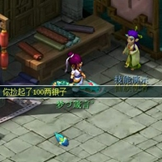

入手准备
必备礼包
初入梦幻，礼包大家一定要记得领取哦，礼包可以帮助你更快的升级，会给大家极大的帮助，如果忘记领取或错过了领取要求的条件那可是很可惜的。
快速升级
0-20级
所在地：新手村，新手村是广大梦幻新人玩家成长奠基石，在这里你可以通过新手指引任务更好的了解梦幻的各种上手基础。当新手任务完成时候，你就可以来到东海湾，你可以选择在东海湾、沉船、东海岩洞这三个地方选择战斗升级到10级。
10级后你已经可以进入长安城，在门派传送人长安城（480，33）处了解各门派的情况,选择一个你心满意足的门派拜师后，就继续去你的练级之路吧！
当你达到15级后，你就可以前往国子监寻找一个游戏中的高手当你的师傅，一个良好的师傅会是你梦幻成长历程中的好伙伴。
15级以后可以选择去大雁塔或者大唐国境练级，练级前记住要领平定安邦任务，领取双倍时间以及组队刷怪哦，这样效率会提高不少。同时，“全新世代黄金礼包”会提供你2小时变成普通狸的变身时间，并有2小时的30%经验加成。
《梦幻西游2》也为玩家们在不同等级阶段都安排了主线剧情让你更快的升级。剧情任务贯穿了整个梦幻体系，是你了解梦幻世界观的第一手资料，你在这阶段可接触的剧情任务：商人的鬼魂 枯萎的金莲
升级任务推荐： 王夫人任务 平定安邦 红尘试炼（推荐）
升级地点推荐：东海湾 沉船 东海岩洞 大唐国境（推荐组队战斗）
任务剧情： 商人的鬼魂 枯萎的金莲
21-40级
玩家达到20级后，将会接触一个全新的玩法―师门任务，这是梦幻的经典任务，每天前20个任务是双倍经验。并且师门任务是不受双倍时间影响的。
25级以后大家可以去长寿郊外，花果山，普陀山等地区刷经验了，建议大家可以选择去长寿郊外练级，因为这里会有狼，狼是推荐给大家的召唤兽，如果有幸遇到个好的狼宝宝，可以在前期给你非常大的帮助。
在这个阶段，如果你想快速提高自己等级，可以前往钟楼寻找一位有实力的玩家带你扫塔、抓鬼。这样可以通过他人的帮助来快速提升自己的等级，还能感受梦幻玩家和梦幻环境的和谐。
升级任务推荐：师门任务 平定安邦 红尘试炼（推荐）
升级地点推荐：大雁塔 花果山 长寿郊外
任务剧情：玄奘的身世
赚钱指南
建邺城捡钱
一开始进入游戏，大家可能需要区分现金和储备金的概念。现金是可流通的，购买其他玩家，NPC的商品需要支付现金，而学习技能，点修炼的时候会优先消耗储备金，储备金不可用来购买物品，只可用来升级技能时消耗。
在10级前，系统会定点提示一阵风吹过，龙宫的许多宝物被吹落在建邺城，这时大家可以在建邺城捡银子，药品和一些召唤兽了哦，这对于新人玩家在前期的成长有着很大的帮助。

打宝图、挖宝图
等级达到30级，玩家就可以在长安酒店找店小二领取强盗宝图任务，俗称打图。打图是梦幻经典玩法，该玩法门槛低，对人物属性，装备等要求较低，而且收益不错。获得的宝图可以选择卖给其他玩家也可以选择自己去挖，挖宝图是另一大乐趣所在，运气好的话一夜暴富不是不可能哦。


押镖
到了30级大家就可以去镖局押镖了，每一趟镖有5000银两的奖励，并且有几率获得鬼谷子（阵法书）。同时大家可以选择押储备金类型的，金钱奖励高于押现金的镖，玩家可以利用押储备金点技能以及修炼。


前面的升级攻略中我们也提到过师门任务，师门奖励不仅有丰富经验奖励还有金钱奖励以及门贡，当门贡累积到300点可以找师傅进行一次领取礼物。

个性装扮
想玩最时尚的梦幻？想把自己打扮的个性帅气？这些梦幻统统都可以帮你实现。梦幻推出的锦衣系统，祥瑞等，可以让你毫无游戏门槛的装扮自己，让你秀出自己的美丽，当然这些是需要仙玉和彩果等道具的，关于如何获得这些道具，以及锦衣祥瑞的详细介绍，请查看以下相关内容。
锦衣系统
锦衣与祥瑞没有等级的门槛要求，所以大家可以尽情的购买自己喜欢的装扮。购买锦衣与祥瑞需要消耗仙玉或者彩果，仙玉可以通过点卡购买，彩果可以使用梦幻币从新鲜玩意或者其他玩家那里购买，两者价格差不多，所以如果想要简单快捷点可使用仙玉购买。
同时，为大家推荐下可以更实惠购买锦衣和祥瑞的方法，那就是购买月卡，年卡等。现在只要购买小月卡、月卡或年卡就免费送仙玉哦，一张月卡就赠送200点仙玉，游戏充点是必须的，但是充点之余还可以获得仙玉，来购买锦衣，祥瑞等，何乐不为呢。详情点击查看月卡与超值年卡说明。


成就系统
在梦幻推出的“功成名就”资料片中，引入了成就系统，只要玩家获得了足够的成就就可以获得一些装饰来装饰自己成就界面的形象，而且这些都是免费的哦，快来成为成就达人，让自己的形象与众不同吧！


染色系统
玩家可以到长安配色师（288，17）处，将自己的服装进行更多的颜色变幻。变换特殊颜色的服饰需要按不同需要使用一定数量的”彩果”、“七色果”、“花豆”，在各类任务活动中可以获得这些奖励哦。

常用术语
初入梦幻，可能你对很多事情都感到新奇，但是也有很多你可能不太了解的地方，而游戏中交流沟通很重要，其他玩家也可以为你带来很多帮助，但是游戏中很多流行简语可能会影响你的理解，这里整理出一些基本的流行简语供大家参考：
JYFF――建邺城(使用飞行符飞到建邺城的坐标点附近) CAFF――长安城天台 XLFF――西凉女国 BB――召唤兽 D5狗(带驱鬼技能的瑞兽) 国标：国际标准，最基本属性的武器装备 YZ――驿站 BYBB――变异召唤兽 WZ――五庄观 AL――傲来国 ZZ――朱紫国 钟楼――长安领取双倍经验前地方 扫塔――通过付费方式让高级玩家带你前往大雁塔战斗